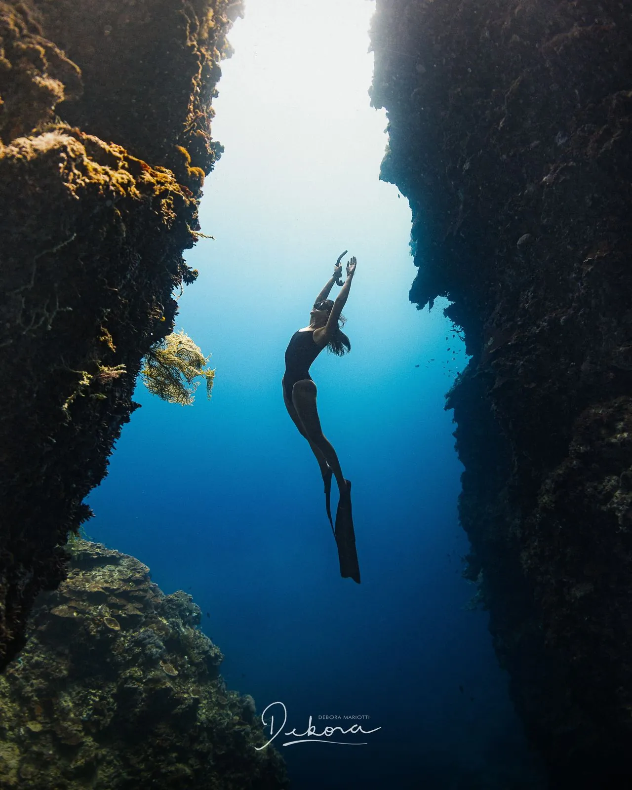
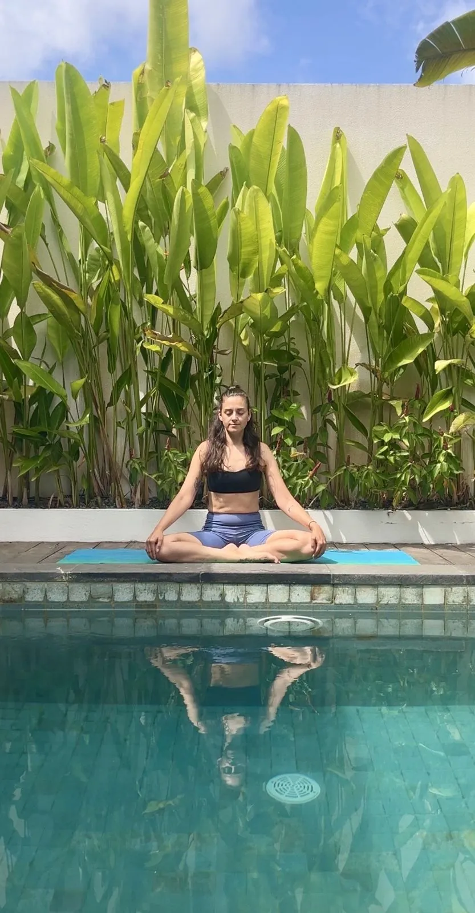
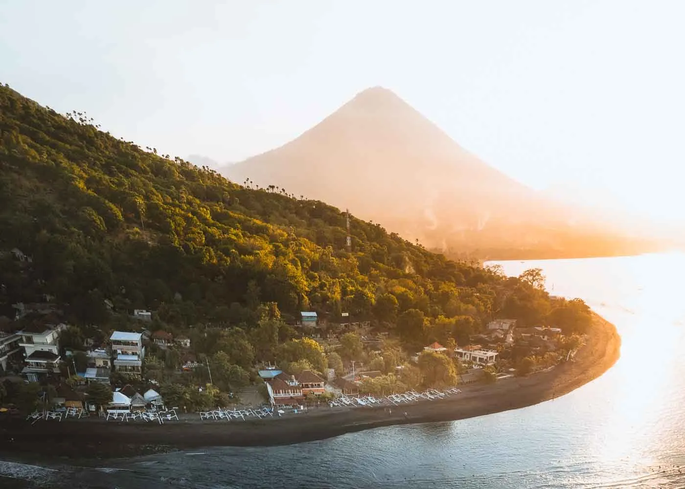
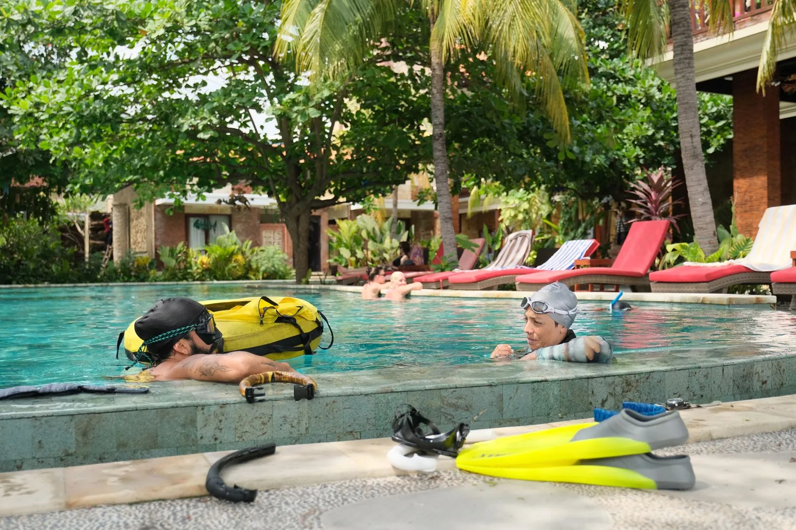

Domů / Voda
Nádech, který vydrží déle.
Vnitřní ponor, retreat V rytmu oceánu na Bali a od léta 2027 kurzy freedivingu.

Kurz: Vnitřní ponor
Příprava na freediving
Tohle není klasický jógový kurz. Není to ani kurz potápění. Je to deset týdnů, ve kterých zjistíš, co všechno dokáže tvůj dech a tvoje tělo, když jim dáš prostor.
Kurz propojuje metodiku AIDA s jógou, dechem a všímavostí. Nejde o čas ani hloubku. Jde o zkušenost, klid a schopnost zůstat v těle i tam, kde by tělo chtělo panikařit.
- 10 lekcí ve studiu a 1 lekce ve vodě: jáma v Aquapalace Čestlice nebo Deep Spot (podle domluvy), vždy s certifikovaným instruktorem freedivingu.
- Skupina 8–10 lidí, uzavřená podpora na WhatsAppu, týdenní domácí úkoly.
- Pro dospělé 25+, kteří rádi zkoušejí nové věci.
- Kurz (10 lekcí ve studiu)3 000 Kč
- Lekce v jámě (Čestlice / Deep Spot) s certifikovaným instruktorempodle domluvy

Retreat: V rytmu oceánu
Amed, Bali, duben 2027
Tohle je víc než jógový retreat na Bali. Tohle je spojení s vodou a se sebou samým skrze opravdové uvolnění a bytí v přítomném okamžiku. Pod vodou to ani jinak nejde.
Provedu tě místem, které považuju za svůj druhý domov. Amed je vesnice, kde je stále málo turistů, ceny nejsou přemrštěné a nikdo si na nic nehraje. Majestátný Agung jde vidět z ulice, ze břehu i z vody. Magické místo.
Další retreat proběhne v dubnu 2027. Přesné datum, program, ubytování i ceny brzy doplním.

Kurz: Freediving
Od léta 2027
Od léta 2027 otevřu kurzy freedivingu ve vodě. Navážou na Vnitřní ponor a povedou tě od prvních ponorů s bezpečností a klidem.
Táhne tě hloubka?
Napiš mi a pošlu ti termíny dalšího Vnitřního ponoru i retreatu.